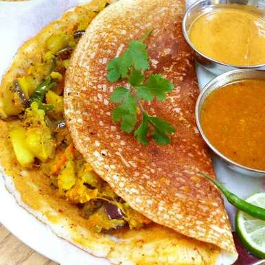

INGREDIENTS
- 1 Cup Rice (par-boiled)
- 1/4 cup Black gram (urad dal)
- 3 tbsp Toor dal
- 3 tbsp Semolina
- 1 tsp Methi seeds (fenugreek seeds)
- to taste Salt
For the dosa masala:
- 250 gram Potatoes
- 1 cup Onions, sliced
- 1 tsp Garlic, chopped
- 1 tsp Ginger, chopped
- 2 tbsp Coriander leaves, chopped
- to taste Green chillies
- to taste Salt
- Oil
- 1 tsp Mustard seeds
- 1 sprig Curry leaves
For red chutney:
- 5-6 cloves Garlic
- A pinch of Ginger
- 2 Red chillies
- 1/2 Onion, chopped
- 2 tbsp Chana dal, fried
- to taste Salt

INSTRUCTIONS
1. Soak all the ingredients except semolina for about four hours.
2. Mix the semolina, salt and water. Make a batter and keep it aside overnight to ferment.
Prepare dosa masala:
1. Boil and peel the potatoes and mash them.
2. Grind the garlic, ginger, coriander leaves, green chillies and onions to make a paste.
3. Heat oil in a pan and add the mustard seeds to it.
4. Saute the remaining onions in it.
5. Add the paste and fry for some time.
6. Add the tomatoes, potatoes, salt and curry leaves.
Prepare red chutney:
1. Roast the chana dal, until slightly browned.
2. You could roast the onion, garlic and ginger for a minute also or just add them raw to the blender.
3. Mix all ingredients and blend to form a paste.
Prepare dosa:
1. Heat a little oil in a pan and spread the dosa batter over it.
2. Pour oil around the dosa and fry well.
3. Smear the dosa with the red chutney.
4. Place some filling in the dosa, fold and serve hot.